Tadotsu, Kagawa: things to do, food and stays
Tadotsu · Kagawa
Tadotsu
Highlighted on the Kagawa map.
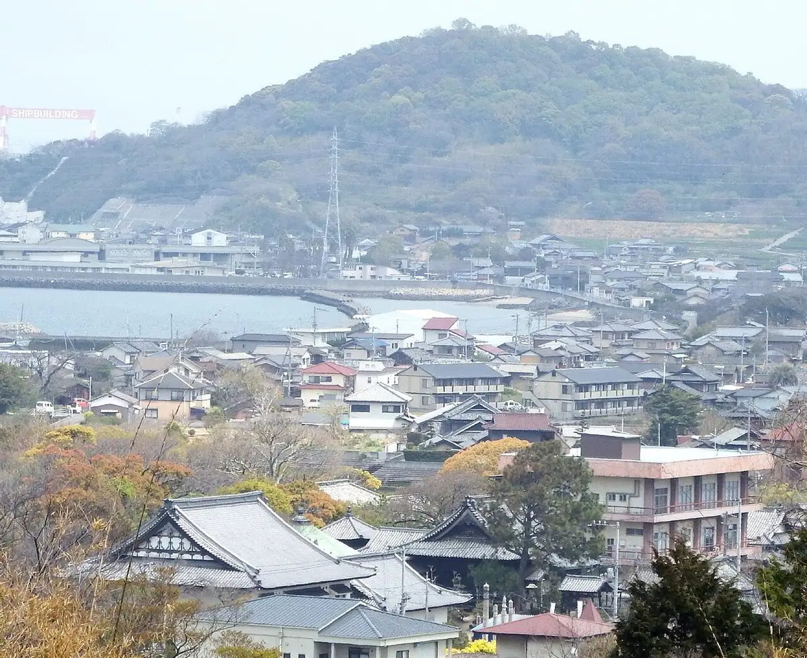
Stay
サウナとプールのシークレットヴィラ ZERO BASE villa -泊Rutto
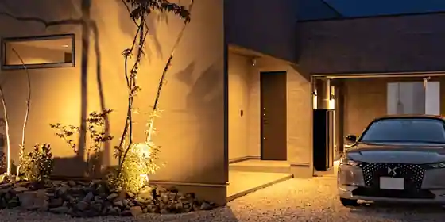
Sauna To Puru No Shikuretto Villa ZERO BASE villa - Haku Rutto
Inn in Hisashi, Tadotsu with a sauna.
ホテルトヨタ
Hotel Toyota
Hotel in Sakae, Tadotsu with Wi-Fi and business travelers.
サウナ＆プール シークレットZERO BASE-泊Rutto
Sauna & Puru Shikuretto ZERO BASE- Haku Rutto
Inn in Hisashi, Tadotsu with a sauna.
空と家 日の出
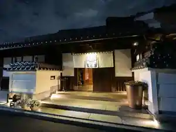
Sora To Ie Hinode
空と家
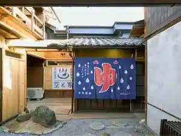
Sora To Ie
マホロバハウス
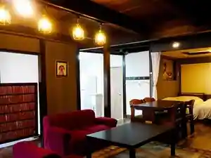
Mahoroba House
Inn in Higashihama, Tadotsu with pet-friendly rooms.
Dining
いけこうどん
Ikekodon
富家
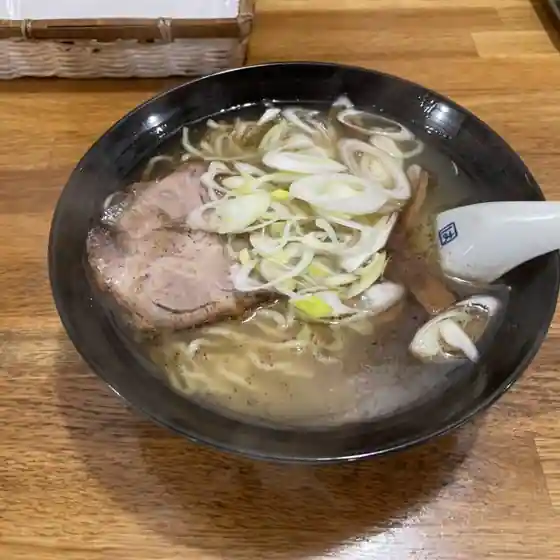
Tomie
そらとたべる threee
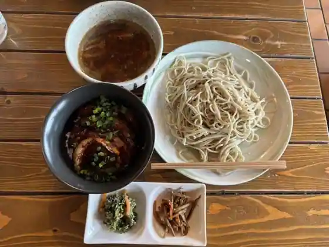
Soratotaberu threee
上海軒
Shanhai Ken
讃岐らぁ麺 伊吹いりこセンター 根ッCO LABO 多度津店
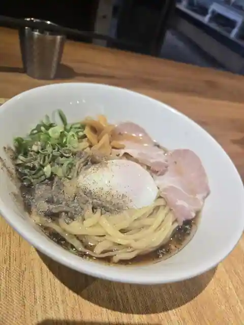
Sanuki Ra Men Ibuki Iriko Center Ne Tsu CO LABO Tadotsu
海鮮うまいもんや浜海道 多度津本店
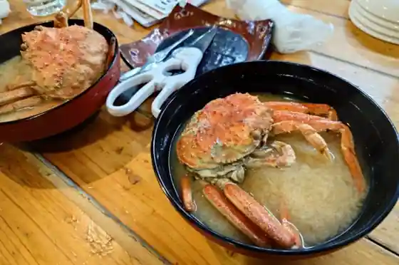
Kaisen Umaimonya Hama Kaido Tadotsu Hon
麦笑
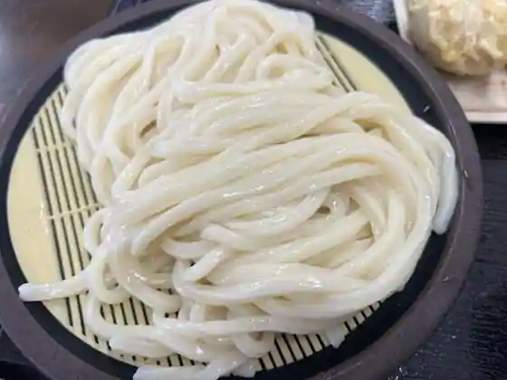
Mugi Warai
焼き肉専門店 成屋
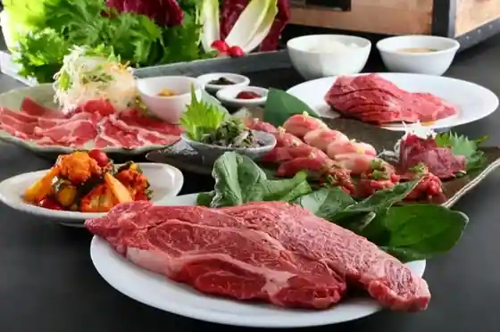
Yakiniku Senmon Sei Ya
Warung Buddha
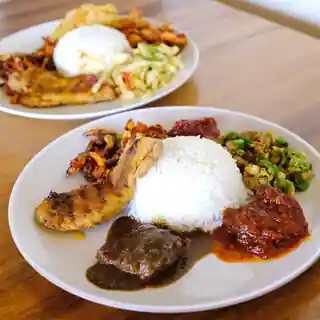
Warung Buddha
藝術喫茶 清水温泉
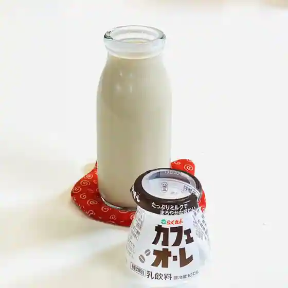
Geijutsu Kissa Shimizu Onsen
釜揚げうどん 岡じま 多度津店

Kama Age Udon Oka Jima Tadotsu
山よし
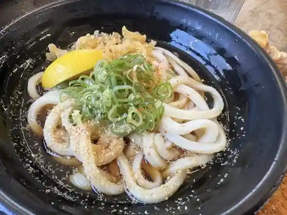
Yama Yoshi
根ッ子
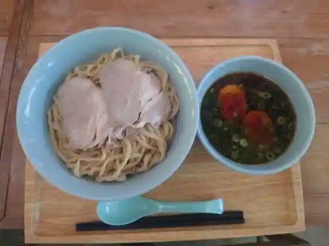
Ne Tsu Ko
ひろ濱うどん
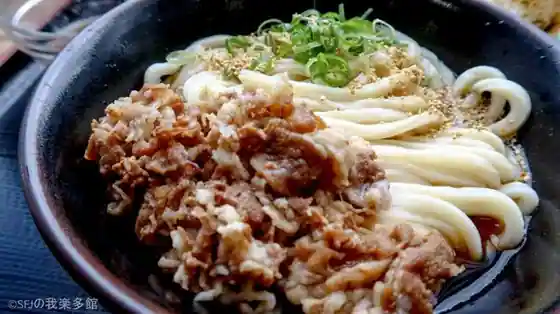
Hiro Hama Udon
お惣菜処てつや
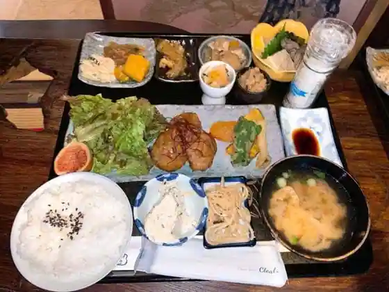
O Sozai Tokoro Tetsuya
cafe 風車の丘
cafe Fusha No Oka
シェ ヨコイ
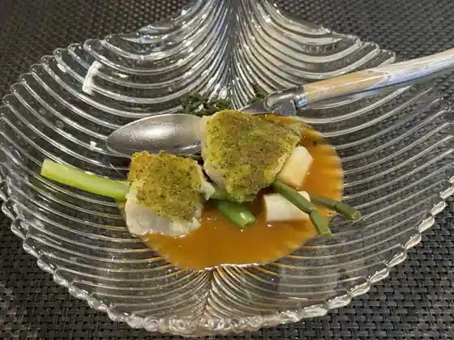
Shie Yokoi
おかげさん
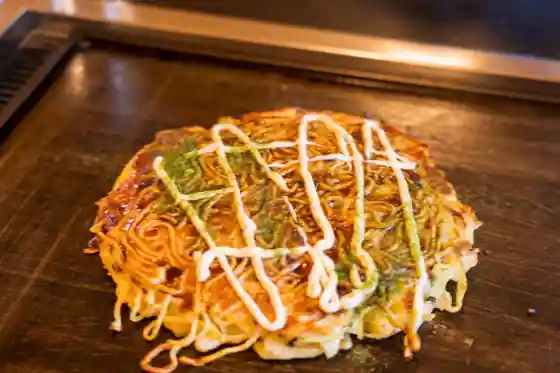
Okagesan
海食処 笑門家
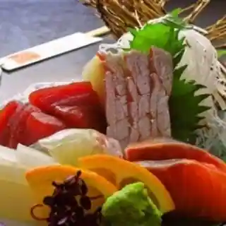
Kaishoku Tokoro Warai Kadoya
めん一
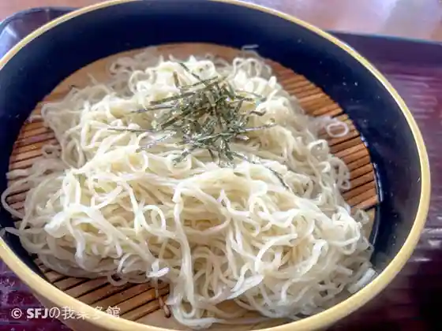
Men Ichi
ポンド
Pondo
まるいち 多度津店
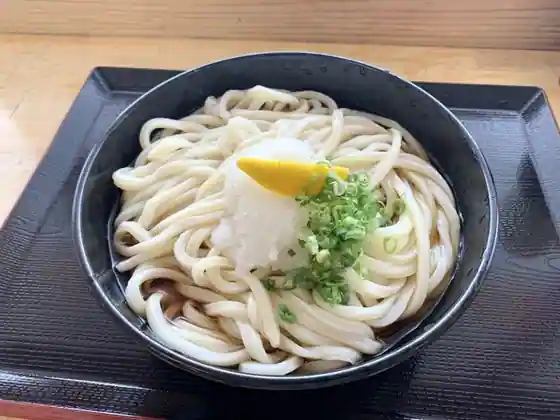
Maruichi Tadotsu
台湾料理 趙記
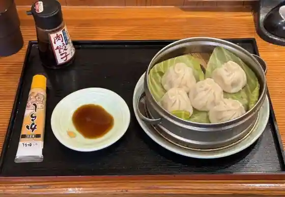
Taiwan Ryori Cho Ki
こがね製麺所 多度津店
Kogane Seimen Tokoro Tadotsu
Sights
Coast Tera
Tadotsu Eki
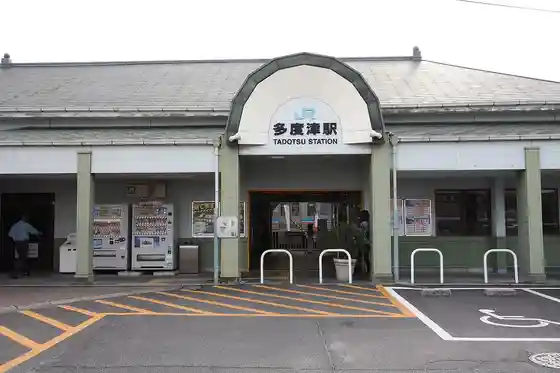
Tadotsu Minato
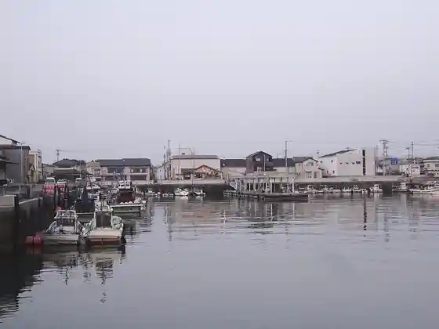